Вот адрес шпоры - тут.
При задании display: flex; флекс-контейнеру, этот контейнер определяется как блочный элемент:
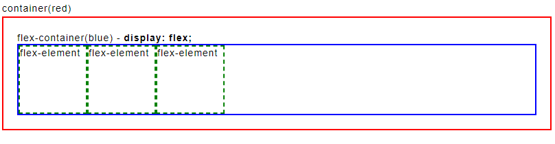При задании display: inline-flex; флекс-контейнеру, этот контейнер определяется как строчный элемент, т.е. флекс контейнер встанет в ряд с другими строчными элементами и расширяется только на ширину флекс-элементов внутри него, но внутри флекс контейнера блоки будут как и в примере выше:
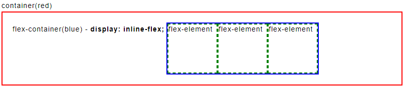Flex-элементы во flex-контейнере могут иметь определенное направление, а именно они могут располагаться в виде строк или в виде столбцов. Для управления направлением элементов CSS3 предоставляет свойство flex-direction. По умолчанию стоит flex-direction: row;. Вот какие значения принимает это войство:
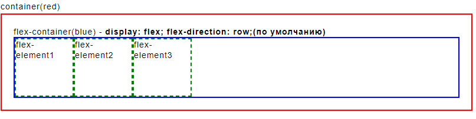 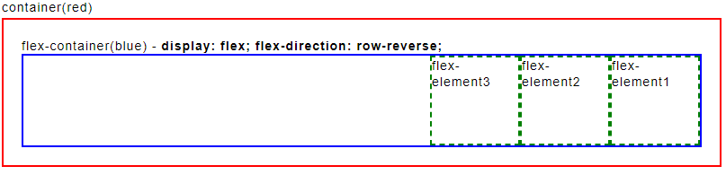 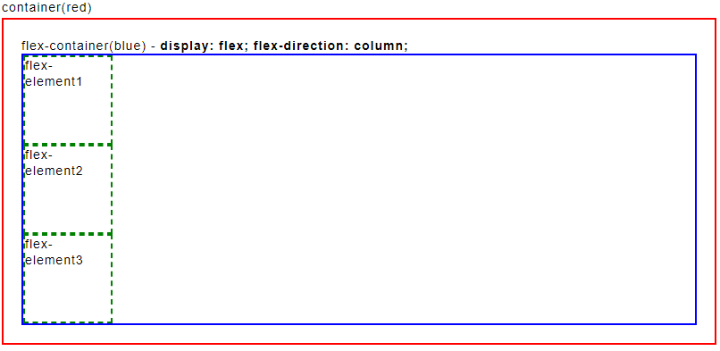 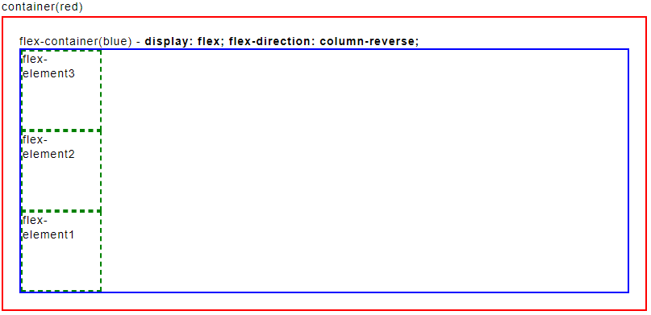Свойство flex-wrap определяет, будет ли flex-контейнер несколько рядов элементов (строк или столбцов) в случае если его размеры недостаточны, чтобы вместить в один ряд все элементы. Это свойство может принимать следующие значения:
flex-flow
Свойство flex-flow позволяет установить значения сразу для обоих свойств flex-direction и flex-wrap. Оно имеет следующий формальный синтаксис: flex-flow: [flex-direction] [flex-wrap]. Причем второе свойство - flex-wrap можно в принципе опустить, тогда для него будет использоваться значение по умолчанию - nowrap.
order
Свойство order позволяет установить группу для flex-элемента, позволяя тем самым переопределить его позицию внутри flex-контейнера. В качестве значения свойство принимает числовой порядок группы. К одной группе может принадлежать несколько элементов. Например, элементы в группе 0 располагаются перед элементами с группой 1, а элементы с группой 1 располагаются перед элементами с группой 2 и так далее.
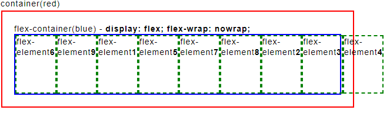Флекс-элементу 6 и 9 задан класс .group1{order: -1;}. Элементам 1, 5, 7, 8 не задан никакой класс, а занчит у них стоит по умолчанию order: 0;. Ну и элементам 2, 3, 4 задан класс .group2{order: 1;}.
justify-content выравнивает элементы вдоль основной оси - main axis (при расположении в виде строки по горизонтали, при расположении в виде столбца - по вертикали) и принимает следующие значения:
Свойство align-items
Свойство align-items также выравнивает элементы, но уже по поперечной оси (cross axis) (при расположении в виде строки по вертикали, при расположении в виде столбца - по горизонтали). Это свойство может принимать следующие значения:
Свойство align-self
Свойство align-self позволяет переопределить значение свойства align-items для одного элемента. Оно может принимать все те же значения плюс значение "auto". auto - значение по умолчанию, при котором элемент получает значение от свойства align-items, которое определено в flex-контейнере. Если в контейнере такой стиль не определен, то применяется значение stretch.
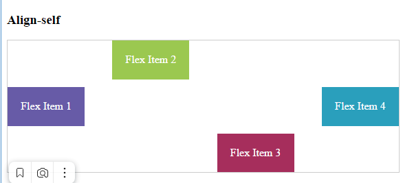Свойство align-content управляет выравниванием рядов (строк и столбцов) во flex-контейнере и поэтому применяется, если свойство flex-wrap имеет значение wrap или wrap-reverse. Свойство align-content может иметь следующие значения:
Кроме свойств, устанавливающих выравнивание элементов относительно границ flex-контейнера, есть еще три свойства, которые позволяют управлять элементами:
flex-basis
Flex-контейнер может увеличиваться или уменьшаться вдоль своей центральной оси, например, при изменении размеров браузера, если контейнер имеет нефиксированные размеры. И вместе с контейнером также могут увеличиваться и уменьшаться его flex-элементы. Свойство flex-basis определяет начальный размер flex-элемента до того, как он начнет изменять размер, подстраиваясь под размеры flex-контейнера. Это свойство может принимать следующие значения:
У первого элемента у свойства flex-basis установлено значение auto. Поэтому первый элемент в качестве реального значения для ширины будет использовать значение свойства width.
У второго элемента у свойства flex-basis установлено значение auto, однако и свойство width имеет значение auto. Поэтому реальная ширина элемента будет устанавливаться по его содержимому.
У третьего элемента свойство flex-basis имеет конкретное значение, которое и используется. А свойство width в этом случае уже не играет никакой роли.
flex-shrink
Если flex-контейнер имеет недостаточно места для размещения элемента, то дальнейшее поведение этого элемента мы можем определить с помощью свойства flex-shrink. Оно указывает, как элемент будет усекаться относительно других элементов. В качестве значения свойство принимает число. По умолчанию его значение 1, это значит, что элементы будут сжиматься одинакого при уменьшении флекс контейнера. Пример:
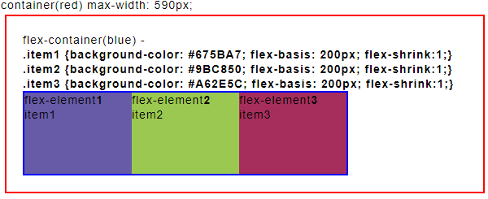А вот другой пример с разным числом в flex-shrink. В данном случае начальная ширина каждого элемента равна 200px, то есть совокупная ширина составляет 600px. Однако ширина flex-контейнера составляет всего 400px. То есть размер контейнера недостаточен для вмещения в него элементов, поэтому в действие вступает свойство flex-shrink, которое определено у элементов.
Для усечения элементов браузер вычисляет коэффициент усечения (shrinkage factor). Он вычисляется путем перемножения значения свойства flex-basis на flex-shrink. Таким образом, для трех элементов мы получим следующие вычисления:
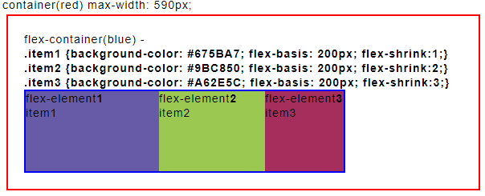 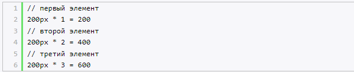первый лемент усёкся на 34px, второй на 68px, третий на 102px.
flex-grow
Свойство flex-grow управляет расширением элементов, если во flex-контейнере есть дополнительное место. Данное свойство во многом похоже на свойство flex-shrink за тем исключением, что работает в сторону увеличения элементов. В качестве значения свойство flex-grow принимает положительное число, которое указывает, во сколько раз элемент будет увеличиваться относительно других элементов при увеличении размеров flex-контейнера. По умолчанию свойство flex-grow равно 0.
Итак, для каждого элемента есть базовые начальные размеры. Здесь явным образом размеры для элементов не указаны, поэтому размер каждого элемента в данном случае будет складываться из размеров внутреннего содержимого, к которым добавляются внутренние отступы.
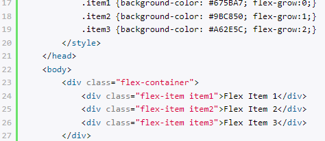По мере растягивания контейнера будут увеличиваться элементы в соответствии со свойством flex-grow, которое указано для каждого элемента. Пространство, на которое растягивается контейнер, считается дополнительным пространством.
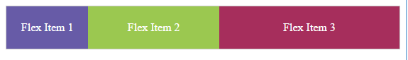Так как у первого элемента свойство flex-grow равно 0, то первый элемент будет иметь константные постоянные размеры. У второго элемента flex-grow равно 1, а третьего - 2. Таким образом, в сумме они дадут 0 + 1 + 2 = 3. Поэтому второй элемент будет увеличиваться на 1/3 дополнительного пространства, на которое растягивается контейнер, а третий элемент будет получать 2/3 дополнительного пространства.
Свойство flex
Свойство flex является объединением свойств flex-basis, flex-shrink и flex-grow и имеет следующий формальный синтаксис:
flex: [flex-grow] [flex-shrink] [flex-basis]
По умолчанию свойство flex имеет значение 0 1 auto.
Кроме конкретных значений для каждого из подсвойств мы можем задать для свойства flex одно из трех общих значений:
Пример:
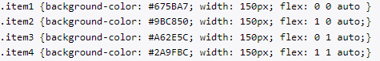 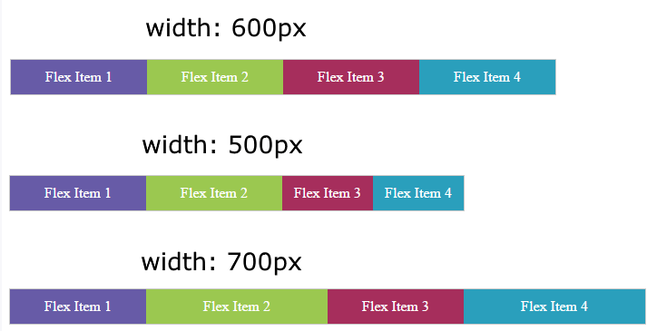Здесь каждый элемент имеет начальную ширину в 150 пикселей, так как у всех элементов свойство flex-basis имеет значение 0, что в целом для всех элементов будет составлять 600 пикселей. При сжатии контейнера будут уменьшаться 3-й и 4-й элементы, так как у них свойство flex-shrink больше нуля. И так как у обоих элементов это свойство равно 1, то оба элемента будут уменьшаться в равных долях. При растяжении контейнера будут увеличиваться 2-й и 4-й элементы, так как у этих элементов свойство flex-grow больше нуля. И также, так как это свойство равно 1, то эти элементы будут увеличиваться в равных долях.